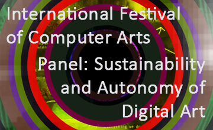
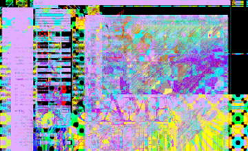
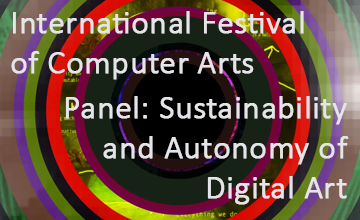
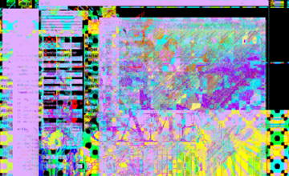
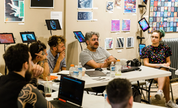
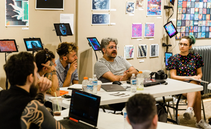

 

Glitch Play is my MFA thesis in Interactive Media and Game Development. It investigates engaging with glitches as a form of play that reveals and enables the ability to renegotiate with the structure of digital systems. You can read it here.
This exhibition explored the intertwined histories of glitch art and video games, featuring 40+ artists from over 5 countries, across two Pittsburgh venues.
As producer, curator, and organizer alongside John Bumstead and Nick Liberatore, I developed the show's conceptual framework and programmed workshops, discussions, and live demonstrations.
I created and moderated the Discussion Game, a participatory conversation format that gathered artists, theorists, and gamers to explore themes of play, control, and system disruption.
This panel of digital artists was brought together in Maribor, Slovenia to discuss digital archiving for community by community for MFRU 2023.
My IRL contributions to the discussion were not so much about my experience as an artist, but rather as a Do-It-Together (DIT) media archivist who is currently organizing, with a couple others— a free, downloadable, public access digital archive for the Glitch Art community.
Those of us working on this project believe that the more you rely on open software, the more accessible an archive becomes. That community projects can operate with more integrity when they remain unaffiliated with any institution(s). And most of all, we actively go against writing any “defining narrative(s),” but rather aim to offer an index of searchable artists and artists’ works, as well as any affiliated history, to enable many narratives to overlap, web and be formed by people of the community, in hopes for a more holistic history to be available to those who care to have it.
I was asked to review a self-curated selection from the 2023 /'FU:BAR/ EXPO. To challenge my own biases, I read only each artist's description before viewing their work, hoping connections would emerge organically. Several pieces focused on control and deliberacy, a theme that felt especially compelling in the context of glitches. It was rewarding to discover that many of my selections came from artists I already admire.
The exhibition reveals precision and chaos as collaborators. From Tomasz Sulej's meticulous GLIC codec to APIACOAB's pixel-perfect narratives, deliberate control amplifies disorder, transforming glitches into intentional expression. Every pixel, every distortion, an authentic creation in the digital realm.
/NOT.GLI.TCH/H was held at the University of Chicago. I presented a talk about online community through the lens of my involvement with Glitch Artists Collective (GAC), likely the world’s largest Glitch Art community.
GAC was established in 2013 on Facebook first (though is also on Instagram, Twitter, and Tumblr) and I initially became involved as an artist near the end of 2014, later becoming curator, which I still am, and occasionally an admin. My talk discussed the aesthetic evolutions of glitch within the community, what questions the community concerns/ed themselves with, the importance of earnest connection + IRL gatherings, and the protective trust based + open-source principles that sets GAC apart from other internet communities.
This discussion was had during the third iteration of GlitchArtIsDead, first shown in Poland in 2015. I was one of the main organizers and curators for GAID III, which featured just over 100 artists from 13 countries, and received a grant from the Southwest Minnesota Arts Council. I moderated this roundtable discussion with Dr. Michael Betancourt, an artist curated into the show whom I asked to also lead this discussion, along with others, including Jamie Fenton, John Bumstead, Aleksandra Pieńkosz, Sabato Visconti, Kaspar Ravel, Sky Goodman and more. The conversation traced glitch art's evolution from 1980s-90s technical accidents to intentional symbolic works that challenge digital boundaries. Participants shared personal experiences with digital disruptions and explored how Glitch Art addresses themes of authenticity, community values, and resistance to commercial frameworks. We examined the physical materiality of digital art and discussed how the movement builds creative resilience within increasingly regulated digital landscapes.
Read the text script for "Here We Are"
Photo taken by Jim Jam
Colour Organ is a digital implementation of Alexander Wallace Rimington's color-music theory, where audio frequencies trigger corresponding colored lights arranged in a 5x7 grid representing octaves and scales. The installation backlit a semi-translucent screen with 35 individual point lights programmed to respond to specific frequency ranges, creating a visual orchestration of the ROYGBIV spectrum synchronized to sound.
Discussion Game was a participatory conversation game that I developed and moderated for Glitch'N'Games’24. Featuring artists, theorists, and gamers including Jamie Fenton, Nick Briz, Sabato Visconti, Kaspar Ravel, and more, the conversation used prompt cards to guide an open-ended dialogue on glitch, control, and play. Topics ranged from quantum logic to surveillance culture, pedagogical theory to personal glitch histories. Rather than defining the glitch, the session treated it as a generative lens—where system instability became a site for shared interpretation, critique, and improvisation.
Read the text script for "Discussion Game"
Photo taken by Nick Briz
An Uncanny Scene is a virtual environment exploring the aesthetic of curious discomfort, where familiar elements become estranged and eerie.
Since 2014, I’ve created looping rotoscoped animations intended to hold a viewer in an evocative moment of intra/interpersonal reflections. These animations are often combined with analog & digital glitch techniques as methodological expressions of engaging as an interpretive system within systems. Positioning myself (and by extension a viewer) as an interpreter embedded within larger systemic boundaries and ruptures.
Naturally, I also draw still images from time to time too.
Most people know me for my digital/analog works, though since 2016, my fabrication practice has been my primary job. I've grown from supporting others’ projects to independently leading design/build work. My experience bridges traditional craft and modern digital tools, allowing me to translate ideas into durable, interactive pieces across a range of contexts.
Light Sleeper, Heavy Dreamer was a collaborative live performance with royb0t exploring memory through glitched digital landscapes and otherworldly music. The interactive piece guided audiences through dream-like environments, combining visual breaks with atmospheric sound.
About
I’m Bee Nix, aka Suture Blue.
As a system amongst systems, I trace how internal states entangle with the larger technosocial worlds by interweaving play, technology, and social structures. Time-based and experiential works tend to be what I make the most.
View CV